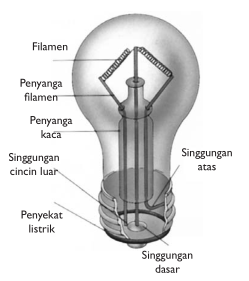

PERUBAHAN ENERGI LISTRIK MENJADI ENERGI CAHAYA
Lampu pijar adalah salah satu alat yang dapat mengubah energi listrik menjadi energi cahaya. Bagian utama lampu pijar adalah kawat halus yang disebut filamen. Filamen ini terbuat dari kawat wolfram. Kawat wolfram memiliki titik leleh yang tinggi, yaitu sekitar 3.400°C. Kawat wolfram pada lampu pijar dilindungi dengan bejana kaca yang diisi dengan gas argon murni. Tujuannya untuk menjaga kawat wolfram agar tahan lama.
Ketika arus listrik melalui kawat halus yang memiliki hambatan besar, elektron-elektron akan bertumbukan dengan atom-atom kawat. Tumbukan pada kawat wolfram ini akan menimbulkan panas dan akan berpijar jika berada dalam ruang hampa udara. Akibatnya, kamu akan melihat lampu memancarkan cahaya.
Pada saat ini, orang lebih menyukai penggunaan lampu TL dibandingkan dengan lampu pijar, karena lampu TL menyala lebih terang dan lebih hemat listrik. Lampu TL terdiri atas sebuah tabung yang berisi gas neon. Loncatan api listrik yang terjadi akibat beda potensial yang cukup tinggi pada ujung-ujung lampu, menyebabkan tabung memancarkan cahaya ultraviolet. Lapisan fosfor yang berwarna putih pada tabung akan memendar sehingga lampu menyala terang.

Tekan tombol ON untuk menyalakan lampu
Tekan tombol OFF untuk mematikan lampu